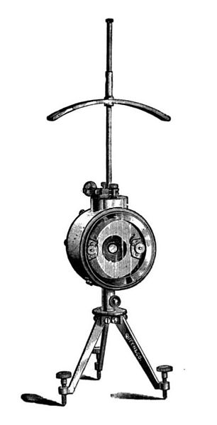
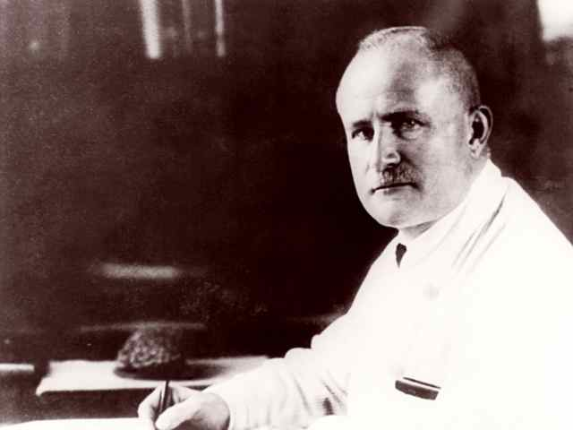

In 1875, Dr. Caton observed electrical activity in rats using Thompson's mirror galvanometer.
This is where the "Father of EEG", German scientist Hans Berger comes onto the scene. He is the one who put pen to paper. (And, notably, not a Nazi. Yay!)
In 1936, Grey Walter (from Kansas City!) discovered Delta Waves. In 1944, he discovered Theta waves.